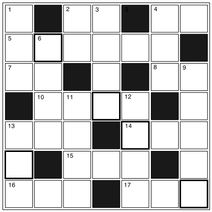

クロスワード
【→ PDF（印刷用）】

- タテのカギ
-
- １. 人が住むための建築物。
- ２. 『得』の反対は？
- ３. 『話題』は外来語で？
- ４. 『苦手』の反対は？
- ６. 容積の単位。２○○○○のペットボトル。
- ９. 期間を延ばすこと。
- 11. 物事が途中で進まなくなったり、失敗すること。
- 12. 食べ物を作ること。
- 13. 太陽が出ること。
- ヨコのカギ
-
- ２. 『内』の反対は？
- ４. 『田舎』の反対は？
- ５. 2012年はロンドンで行なわれる。
- ７. 足にはくもの。
- ８. 人が住むための建物。
- 10. 日本酒を入れる容器。
- 13. 朝から夕方までの太陽が出ている時間。
- 14. 年齢や行動・考えが幼いこと。
- 15. 頭の中にあるもの。頭の働きのこと。
- 16. 偉い人の一生を書いた文章。
- 17. ある人が考える最高の状況のこと。
【→ 解答を見る】